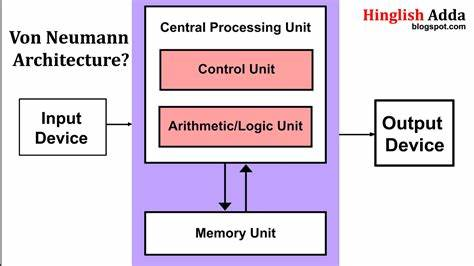
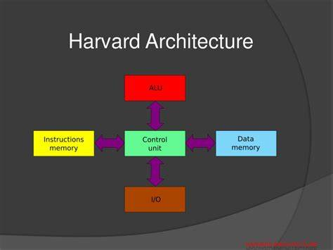

DIFFERENCE BETWEEN VON NEUMAN AND HARVARD ARCHITECTURE
|  |
 |
Von neumann Architecture
|
Harvard Architecture
|
| The Von Neumann architecture is a style of computer architecture that is straightforward and makes use of a single memory connection |
The Harvard Architecture is the current design standard, and it features RAM and ROM that are kept completely independent. |
| The layout is straightforward and makes use of the same path to both store data and take instructions. |
When compared to the Von Neumann architecture, this design is more complicated because it utilises separate connections for RAM and ROM. |
| When compared to Harvard Architecture, the hardware requirements are significantly lower. |
When compared to the Von Neumann Architecture, the Harvard Architecture places a greater emphasis on the use of hardware. |
| In comparison to the Harvard Architecture, the speeds of the processors are significantly lower. |
Harvard Architecture is faster than the others. A computer modelled are significantly lower. after the Harvard Architecture calls for an increase in the available space. |
| When compared to the Harvard Architecture computers, the Von Neumann computers have a smaller footprint in terms of the required amount of physical space. |
In Harvard Architecture, the requirement for the actual space is increased. |
| Because the memory and the programmes share the same space, there is no unused space in the internal memory. |
Because the instruction memory and the data memory cannot share the same space, some of Harvard's internal memory is going to waste somewhere. |
| The instructions for running can either be taken from the programme that has been stored or they can be given explicitly. As a result, the two cannot be considered together. |
Due to the fact that the input and the programme instructions that are stored in the programme are taken simultaneously, the running instructions are somewhat complicated and somewhat slow. |